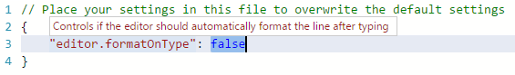

JSON is a data format that is common in configuration files like package.json or project.json. We also use it extensively in VS Code for our configuration files. When opening a file that ends with .json, VS Code provides features out of the box to make it simpler to write or modify the file’s content.
JSON Comments
Comments in JSON are an extension to JSON specification that is supported by VS Code. You can use single line (//) as well as block comments (/ /) as used in JavaScript.
IntelliSense & Validation
For properties and values, both for JSON data with and without a schema, we offer up suggestions as you type with IntelliSense. You can also manually see suggestions with the Trigger Suggestions command (⌃Space (Windows, Linux Ctrl+Space)). We also perform structural and value verification based on an associated JSON schema giving you red squigglies.

Package and Project Dependencies
We also offer IntelliSense for specific value sets such as package and project dependencies in package.json, project.json and bower.json.
Quick Navigation
JSON files can get pretty large and we support quick navigation to properties the Go to Symbol command (⇧⌘O (Windows, Linux Ctrl+Shift+O)).

Hovers
When you hover over properties and values for JSON data with or without schema, we will provide additional context.

Formatting
You can format your JSON document using ⇧⌥F (Windows Shift+Alt+F, Linux Ctrl+Shift+I) or Format Document from the context menu.
JSON Schemas & Settings
To understand the structure of JSON files, we use JSON schemas. JSON schemas describe the shape of the JSON file, as well as value sets, default values, and descriptions.
Servers like JSON Schema Store provide schemas for most of the common JSON based configuration files. However, schemas can also be defined in a file in the VS Code workspace, as well as the VS Code settings files.
The association of a JSON file to a schema can be done either in the JSON file itself using the $schema attribute, or in the User or Workspace settings (File > Preferences > Settings) under the property json.schemas.
VS Code extensions can also define schemas and schema mapping. That’s why VS Code already knows about the schema of some well known JSON files such as package.json, bower.json and tsconfig.json.
Mapping in the JSON
In the following example, the JSON file specifies that its contents follow the CoffeeLint schema.
|
Please note that this syntax is VS Code-specific and not part of the JSON Schema specification. Adding the $schema key changes the JSON itself, which systems consuming the JSON might not expect, for example, schema validation might fail. If this is the case, you can use one of the other mapping methods.
Mapping in the User Settings
The following excerpt from User settings shows how .babelrc files are mapped to the babelrc schema located on http://json.schemastore.org/babelrc.
|
Tip: Additionally to defining a schema for
.babelrc, also make sure that.babelrcis associated to the JSON language mode. This is also done in the settings using thefiles.associationarray setting.
Mapping to a Schema in the Workspace
To map a schema that is located in the workspace, use a relative path. In this example, a file in the workspace root called myschema.json will be used as the schema for all files ending with .foo.json.
|
Mapping to a Schema Defined in Settings
To map a schema that is defined in the User or Workspace settings, use the schema property. In this example, a schema is defined that will be used for all files named .myconfig.
|
Mapping a Schema in an Extension
Schemas and schema associations can also be defined by an extension. Check out the jsonValidation contribution point.
Define Snippets in JSON Schemas
JSON schemas describe the shape of the JSON file, as well as value sets and default values which are used by the JSON language support to provide completion proposals.
If you are a schema author and want to provide even more customized completion proposals, you can also specify snippets in the schema. The following example shows a schema for a key binding settings file defining a snippet:
|
Use the property defaultSnippets to specify any number of snippets for the given JSON object.
labelanddescriptionwill be shown in the completion selection dialog. If no label is provided, a stringified object representation of the snippet will be shown as label instead.bodyis the JSON object that is stringified and inserted when the completion is selected by the user. Snippet syntax can be used inside strings literals to define tabstops, placeholders and variables. If a string starts with^, the string content will be inserted as-is, not stringified. You can use this to specify snippets for numbers and booleans.
Note that defaultSnippets is not part of the JSON schema spec but a VS Code specific schema extension.